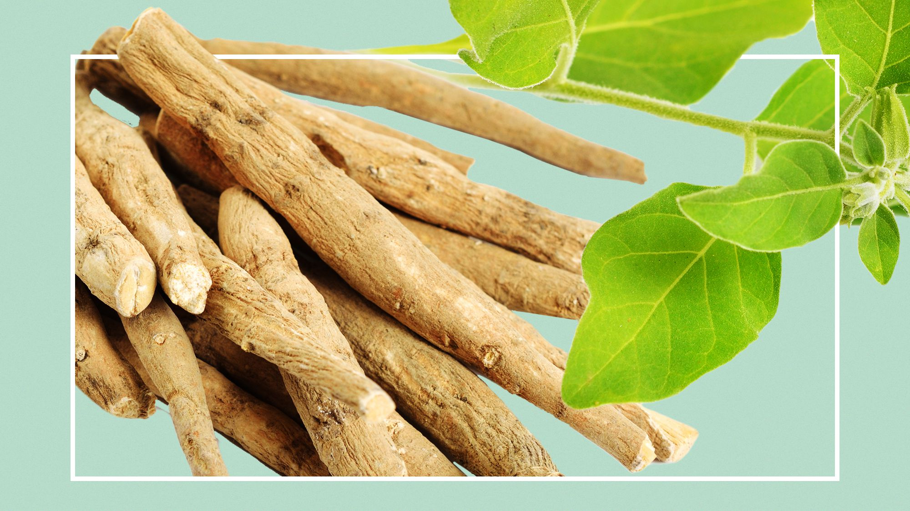
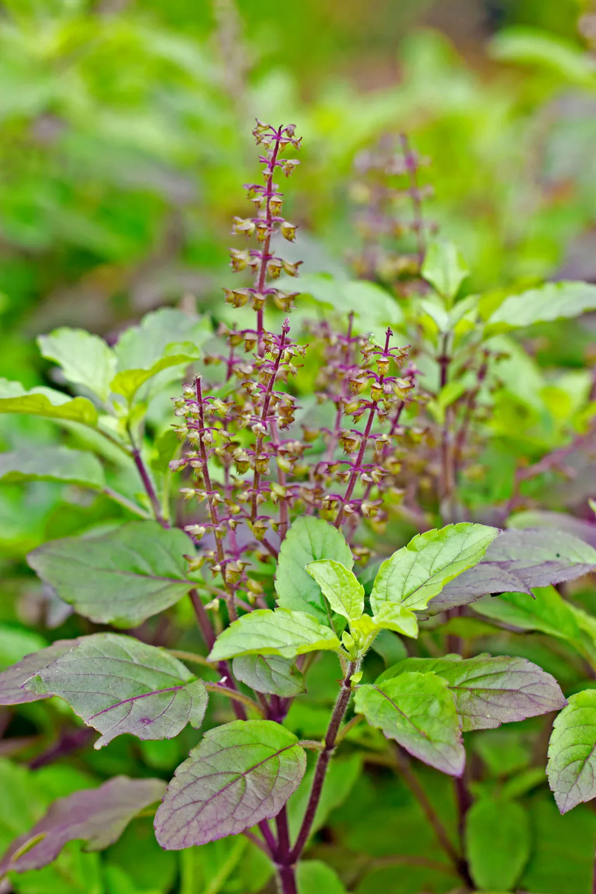

Amla
Botanical name:Emblica officinalis
Amla, also known as Indian gooseberries, grows on a flowering tree of the same name. The small berries are round and bright or yellow-green. Though they are quite sour on their own, their flavor can enhance recipes they’re added to.The vitamin C in amla is absorbed more easily by the body compared to store-bought supplements.Studies have shown that the carotene in amla improves vision. Daily consumption has also been linked to improvement in overall eye health as amla can reduce cataract problems, intraocular tension (the pressure you feel) as well as prevent reddening, itching, and watering of eyes. The Indian Gooseberry is also rich in Vitamin A that lowers the risk of age-related macular degeneration.A protein present in amla helps prevent cravings. Amla also has a very low carbohydrate and fat content.Nutritionists say amla boosts metabolism too, making one shed weight faster. Amla has high fibre content and acids like tannic which help relieve constipation and make you look less bloated.Amla’s antibacterial and astringent properties boost one’s immune system. A significant number of health problems including cancer are caused by oxidative damage –when body cells use oxygen,they leave behind harmful by-products called free radicals. Considering amla is a potent antioxidant agent, it can prevent this oxidation and help in protecting the cell.Amla is the best anti-ageing fruit.Amla is loaded with chromium which aids in reducing bad cholesterol and also helps stimulate insulin production, thereby reducing the blood glucose level of diabetics.
Ashwagandha
Botanical name:Withania somnifera
Ashwagandha is an evergreen shrub that grows in Asia and Africa. It is commonly used for stress. There is little evidence for its use as an adaptogen. Ashwagandha contains chemicals that might help calm the brain, reduce swelling, lower blood pressure, and alter the immune system. Ashwagandha appears to help control mediators of stress, including heat shock proteins (Hsp70), cortisol, and stress-activated c-Jun N-terminal protein kinase (JNK-1) .It also reduces the activity of the hypothalamic-pituitary-adrenal (HPA) axis, a system in your body that regulates the stress response.Research has shown that ashwagandha may have beneficial effects on athletic performance and may be a worthwhile supplement for athletes.Some evidence suggests that ashwagandha may help reduce symptoms of other mental health conditions, including depression, in certain populations.Ashwagandha supplements have been shown in some studies to benefit male fertility and increase testosterone levels.Limited evidence suggests that ashwagandha may reduce blood sugar levels through its effects on insulin secretion and cells ability to absorb glucose from the bloodstream.Ashwagandha supplements may improve memory, reaction time, and the ability to perform tasks in certain populations.

Bhumi amlaki
Botanical name:Phyllanthus amarus
Bhumi Amla helps in managing liver disorders and reverses any damage caused to the liver due to its hepatoprotective, antioxidant and antiviral activities. It also helps to prevent ulcers by reducing gastric acid production as well as protecting the stomach lining against damage caused by excessive gastric acid. Bhumi Amla might also reduce the risk of kidney stone formation due to its diuretic property. It does so by promoting the removal of salts (mainly oxalate crystals) that are responsible for the formation of kidney stones. According to Ayurveda, Bhumi Amla is considered good for indigestion and acidity due to its pitta balancing property. It might also be beneficial for diabetics as it helps manage blood sugar levels due to its tikta (bitter) property. od purifying property.Bhumi Amla is one the best herb for managing liver problems like swelling in the liver, jaundice and weak liver function Bhumi Amla not only helps in liver detoxification but also helps in nourishment due to its properties of Rasayana( rejuvinating ) and Pitta balancing.It lowers indigestion and acidity due to its properties of Pitta balancing which helps to improve digestion and Sita (cold) potency which helps to reduce acidity.Bhumi Amla manages high sugar level due to its Tikta (bitter) and Kashaya (astringent) rasa properties which helps to improve metaboslim and control high sugar level in the blood.It is good to reduce bleeding in nasal bleeding, heavy bleeding in the menstrual period due to its Sita (cold ) potency and Kashaya (astringent) property which helps in balancing Pitta and control excessive blood flow.It acts as a blood purifier and reduces skin disorders when taken internally due to Tikta(bitter) Rasa and Pitta balancing nature.Bhumi Amla has the property of balancing Kapha as a result of which it reduces cough, asthma, breathlessness, and hiccup.Bhumi Amla also reduces fever (associated with typhoid infection) due to its Tikta (bitter) and Pitta balancing properties which help to metabolism and remove the toxin from the body.
Brahmi
Botanical name:Bacopa monnieri
Brahmi is primarily has been used for nearly 3000 years by Ayurvedic medical professionals. As the brain is considered the centre of creative activity, any substance that might boost the brain’s health is known as brahmi. It also means ‘bringing knowledge of the supreme reality”. Brahmi may be recognised as a popular memory booster among locals. Brahmi is used for Alzheimer's disease, improving memory, anxiety, attention deficit-hyperactivity disorder (ADHD), allergic conditions, irritable bowel syndrome, and as a general tonic to fight stress.People also take brahmi to treat backache, hoarseness, mental illness, epilepsy, joint pain, and sexual performance problems in both men and women. It is also sometimes used as a “water pill.”Brahmi might increase certain brain chemicals that are involved in thinking, learning, and memory.
Cajanus scarabaeoides
Local name:Chowkhara
'Cajanus scarabaeoides' is one of the closest wild relatives to the cultivated pigeonpea and has high drought tolerance and high protein content. Being screened at the campus of the International Crops Research Institute for the Semi-Arid Tropics in Patancheru, India.
Celastrus paniculatus Willd
Local name:Malkangani
Boiled solution of fruits and seeds with oil use in piles, gout, rheumatism, cold, dysentry, diarrhoea, leprosy, snake bite, wound, anti-spasmodic, carminative and antihelmintic properties and also used for treatment of epilepsy, mental ailments, chronic diarrhea, dysentery, bronchial catarrh, intermittent fevers and tumors; pneumonia; leucorrhoea.
Dicliptera bupleuroides Nees
Local name:Soriul
Decoction of seeds and leaves with water very useful in dysentery; respiratory and urinary tract infections, digestive disorders, sexual problems, skin diseases, liver ailments, wound healing, blood vomiting, malaria, piles, epilepsy, jaundice, gummosis, round worms, hepatitis
Drimia indica (Roxb.) Jessop (Asparagaceae)
Local name:Banpyaja
Juice of bulb is used in cough, bronchitis, nematode infection, pyrexia dropsy, respiratory ailment, bone and joint complications, skin disorders, epilepsy and cancer .
Euonymus tingens Wall
Local name:kusum
The powder mixture of 10gm with opium seeds (10gm), almond (5gm), kali mirch (5gm) and bansh mishri (10gm) used orally in kidney stone and eye diseases.
Echinacea
Botanical name:Echinacea angustifolia
Echinacea has a numbing sensation that relieves the pain of cold sores, and also offers some protection against herpes simplex viruses. Echinacea acts against Candida albicans, the microorganism that causes most yeast infection. Echinacea is a mild antiseptic on its own, but when fighting an established virus, combining echinacea with antiseptic herbs such as goldenseal or Oregon grape enhances the effectiveness of the treatment.
Ficus auriculata Lour
Local name:Timil
Gastrointestinal problems treated by using 50-100ml fresh leaves juice when used regularly upto 10 days. Bark and root show hypoglycemic and anthelmintic activity. Fruit extracts exhibits anti-tumour activity.
Ficus palmata Forssk
Local name:Bedu
Fruits are beneficial in lung and bladder diseases. Along with these are good source of minerals, phosphorus and a small amount of Vit. C ; the latex is useful in wound healing.
Gymnema sylvestre (Retz.) R.Br. ex Sm
Local name:Aphe
Boiled leaves with til-oil when applied externally 3-4 drops twice per day used for eyes to reduce pain. Direct use of milky juice from crushed fresh leaves when applied once daily for 3 day also helpful in eye problems along with antidiabetic properties.
Gymnosporia spinosa (Blanco) Merr. & Rolfe
Local name:Vaikal
Paste of leaves useful in Bala-shosha (a condition in which child is emaciated) when applied and rubbed on back.
Hedychium spicatum Sm
Local name:Kapurkachari
Root powder is very useful in neuro muscular disorders and body pain along with anticancerous and antimicrobial activities.
Helicteres isora L
Local name:Atanda
Orally use of crushed roots used in excessive appetite, empema and stomachic; having antioxidant and anticancer properties.
Impatiens
Botanical name:Impatiens capensis
The juice of impatiens is a traditional remedy for all sorts of skin ailments including poison ivy.
An oft-repeated folk saying, "Wherever poison ivy is found, impatiens grows close by". To use it, you can simply crush the leaves and rub it on the itchy places. Jewelweed has enjoyed a popular place in home remedies for centuries. Its medical qualities have not shown much promise in scientific studies, but that doesn't mean much to those who use it and swear by its effectiveness.
Ivy gourd
Botanical name:Coccinia grandis
Ivy gourd is used in Ayurvedic medicine and Asian cuisine in a very similar manner to that of bitter melon. This very adaptable plant has been introduced to Hawaii as a food crop where it has become an invasive species. The plant has a potential hypoglycemic action in patients with mild diabetes.

Jalap Bindweed
Botanical name: Convolvulus Jalapa Syn. Ipomea purga
The Jalap Bindweed is a native of South America and derives its name from Xalapa Mexico, where it grows. Jalap has been known in Europe since the beginning of the 17th century for it's strong cathartic and purgative action. Jalap is prepared from the resin in the roots.
Juniper Berries
Botanical name:Juniperus communis
Juniper helps to eliminate excess water and is used as a mild diuretic to treat to treat urinary problems, usually in combination with other herbs. In 1984, the German Commission E approved the use of juniper dried fruit in teas and extracts to relieve dyspepsia (disturbed digestion or indigestion), but did not approve juniper as a single-ingredient aquaretic (an agent that increases urine flow, without affecting electrolyte balance).
Juniper's detoxifying properties are also employed in the treatment of wounds and inflamatory diseases such as gout and rheumatoid arthritis and according to studies inhibited the formation of inflammatory prostaglanins.
Kelp/Bladderwrack
Botanical name:Fucus vesiculosis
Kelp is commonly used in herbal medicine to stimulate the thyroid function, and can be effective in weight loss as part of a low calorie diet. The consumption of seaweeds has also been associated with lower cancer rates.
For vegans (vegetarians who eat no animal products at all), it supplies vitamin B12, otherwise found almost exclusively in animal products, and is a concentrated source of minerals, including iodine, potassium, magnesium, calcium, and iron. As a source of iodine, it assists in the production of of thyroid hormones, which are necessary for maintaining healthy metabolism in all cells of the body. The brown algae known as bladderwrack is a particularly common source of kelp.
Kola Nut
Botanical name:Cola acuminata
Kola nuts contain caffeine, which may explain their popular use in energy tonics. Native to Africa, the nuts of this towering tree are also a traditional medicine thought to enhance male potency. Kola is listed as having aphrodisiac, stimulant, and cardiotonic properties in the Duke phytochemical database.
Lemongrass
Botanical name:Cymopogon citratus, C.flexuosus
Lemongrass is a well known medicinal herb in the east, as well as being widely used in Thai, Indonesian,Vietnamese, and Caribbean cooking. In Ayurvedic medicine a preparation of lemon grass with pepper has been used for relief of menstrual troubles and nausea. Lemon grass is a mild diuretic and a digestive stimulant that promotes digestion of fats.
Lovage
Botanical name:Levisticum officinale
Lovage is an old English garden herb whose use dates from the fourteenth century. Lovage's properties are similar to closely related umbelliferous plants like angelica, carrots,celery, and parsely. Lovage contains quercetin, which makes it a good garden remedy for allergies, respiratory problems, and is effective diuretic for treatment of urinary tract inflammation.
Maidenhair Fern
Botanical name:Adiantum capillus-veneris
This lovely fern is mainly valued today as a house plant, or an attractive addition in shade gardens, but its history as a botanical reaches back to Dioscordies who prescribed it for pectoral complaints. The plants mucilage content would support this use. It's addition to hair tonics would seem to stem from more from legend and fancy than not, the botanical name Adiantum means unmoistened or water-repelling; Venus is said to have risen from her watery home with dry hair.

Meadowsweet
Botanical name:Filipendula ulmaria
Meadowsweet is a mild, but effective anti-inflammatory herb used to treat arthritis and other aches and pains. Meadowsweet leaves and flowers contain salicylates, compounds that are converted by the body to aspirin. Meadowsweet is especially helpful for those arthritis sufferers who have gastritis, (inflammation of the stomach lining) from years of taking NSAIDs. While it may seem contradictory at first, since aspirin and salicylates are know for causing stomach upset, but years of observation and historic use confirm that meadowsweet is effective in a wide range of digestive problems, including diarrhea in children.
Neem
Botanical name:Azadirachta Indica
Neem has been used as a traditional cure in Ayurvedic medicine traditions in India since ancient times and is one of the oldest medicines in use today. Neem is valued for its leaves and nuts, even the twigs and bark are made use of in Indian villages. Neem oil is cold pressed from the whole nut and is exceptionally rich. The downside is the heavy, slightly unpleasant odor, however it is so effective that you can learn to live with it. Neem has antibacterial and antifungal activity and moisturizing and regenerative properties, contains Vitamin E, and has essential fatty acids. The antibacterial action can be explained by the plant's component azadirachtin, which is known to destroy the bacterial cell wall and thus inhibit the growth of bacteria.1 These medicinal properties make it ideal to treat a variety of skin conditions such as acne, eczema, psoriasis, scabies, and athletes foot.
Neroli
Botanical name:Citrus aurantium subsp. amara or Bigaradia
Neroli's rich and lovely aroma make it an idea scent to give your home an air of tranquillity and relaxation. Worn as a perfume, it keeps the psyche from overreacting to stimuli and helps you maintain a calm countenance.

Oak Bark
Botanical name:Quercus alba
The mighty oak tree looms large in both mythology and herbal medicine and has been part of the plant pharmacopoeia for thousands of years. Oak bark is a powerful astringent treatment for throat and mouth infections, bleeding gums, and to cure acute diarrhea. Oak bark is a styptic, one of the herbs used to slow bleeding in cuts and wounds. Oak bark tinctures and extracts have been studied for use in kidney infections and kidney stones.

Oxeye Daisy
Botanical name:Chrysanthemum leucanthemum Syn. Leucanthemum vulgare
The oxeye daisy has medicinal properties similar to chamomile , but much weaker.he balsamic flowers were once much more used as a country simple than today, when the flowers, stalks and leaves were used to make an infusion to relieve chronic coughs. The root was also employed as a fluid extract for treating night sweats in pulmonary consumption in early America.

Poke Root
Botanical name:Phytolacca americana Syn. Phytolacca decandra
Pokeroot use is rooted in the folklore of the Amercian Indian and early settlers and is a staple of poor country folk in the South. This does not mean that poke root is a safe herb, it is most certainly not for the amateur herbalist. Use of pokeroot to treat serious conditions such as lymphedema, testicular inflammation, ovarian pain, or as an alterative for cancer, should be medically supervised. External use of the tincture for skin conditions should be only be attempted by those who are very knowledgeable in the use of herbal medicine.

Psyllium
Botanical name:Plantago psyllium
The seeds of the Plantago ovata contain copious amounts of mucilage that are able to treat diarrhea, constipation and act as a safe and effective weight loss aid. Psyllium seed can be used to treat: “Chronic constipation; disorders in which easy bowel movements with a loose stool are desirable, e.g., in patients with anal fissures, hemorrhoids, following anal/rectal surgery; during pregnancy; as a secondary medication in the treatment of various kinds of diarrhea and in the treatment of irritable bowel.
Quassia
Botanical name:Quassia amara
Quassia Bark extract is said to be many times more bitter than quinine, and can be used as a substitute in many medications that would normally contain quinine. Quassia Bark is used as as a febrifuge by the traditional healers of Brazil for malaria fevers. The bitter bark also acts as a digestive aid, an insecticide, and is used to treat liver and gallbladder problems.
Quercus leucotrichophora
Local name:Banj oak
The Quercus leucotrichophora is among the most useful trees of the Himalayas. It is extensively lopped (or branch pruned) for fuelwood and its wood has a high calorific value and good burning properties. The leaves are extensively used as a cattle fodder. The leaf litter is rich in nitrogen and makes an excellent compost fertilizer. The timber, while hard and strong and used for agricultural implements, is not particularly valuable as it is hard to work.

Rosemary
Botanical name:Rosmarinus officinalis
Rosemary stimulates the central nervous system and circulation making it beneficial for low blood pressure and sluggishness. Rosemary oil and rosemary essential oil are used to alleviate the pain of sprains, arthritis, sciatica and neuralgia. Rosemary has also been used traditionally to ease asthma. The essential oils in rosemary leaf can block histamine, the chemical culprit of both asthma and allergies. Rosemary, along with other culinary herbs may offer a way to help manage diabetes. These herbs contain several flavonoids that inhibit DPP-IV and should be investigated further regarding their potential in diabetes management.

Ravensara
Botanical name:Ravensara aromatica Syn. Agathophyllum aromatica
Essential oil made from the leaves of Ravensara aromatica is referred to as aromatic ravensare, to distinguish it from oil distilled from the bark, havozo. The oils have a faint, aniseed, or licorice odor that is slightly herbaceous.The essential oil is referred to as "the oil that heals" and is is obtained by steam distillation from the leaf.

Salad Burnet
Botanical name:Sanguisorba minor Syn. Poterium Sanguisorba
Salad burnet , while not considered one of the major additions to the herbal pharmacopoeia, is still a decorative and endearing herb.T he plant name, Sanguisorba, derived from the Latin, gives clue to its ability to staunch blood from wounds, and is closely related to the alchemilla genus which are used in the same manner. The plant is healing, tonic, styptic and cooling, having much the same medicinal qualities as the less tasty medicinal burnet (Sanguisorba officinalis). Like borage, burnet wasbest known for its ability to "lighten the heart" and was most often served in wine.

Sceletium
Botanical name:Sceletium tortuosum
Sceletium is a recent newcomer to the western herbal market that has a long history of use in South African traditional medicine. The herb is used as a mild antidepressant and mood booster.
Tulasi
Botanical name:Ocimum sanctum Syn. Ocimum tenuiflorum
Tulasi is used in Ayurvedic medicine for common colds, headaches, stomach disorders, inflammation, heart disease, various forms of poisoning, and malaria.
Tulasi is an excellent example of an adaptogen herb that can help relieve the stress of modern living. Oxidation caused by free radicals and chronic inflammation are potent sources of mind and body stress.

Thyme
Botanical name:Thymus vulgaris
Thyme is one of the best herbs to use as a cough and cold remedy, addressing all your cold symptoms in a holistic way. Thyme acts both as an expectorant to clear the lungs of congestion and as a antitussive, calming coughing spasms.
hyme tea will settle the stomach, help you sleep, soothe a sore throat, relieve aches and pains, and encourage your body to sweat, helping to eliminate toxins and bring down a fever. Drinking a warm thyme tea sweetened with thyme honey is a pleasant and tasty way to get these benefits. Thyme essential oil can also be used in room diffusers.
Unicorn Root - Colic Root
Botanical name:Aletris farinosa
The bitter tasting roots are known best as a female tonic, and a useful uterine sedative that used in cases of chronic miscarriage.The useful properties are better extracted by alcohol rather than in tea. Small doses of 5 to 10 drops of tincture are prescribed in Potter's Cyclopaedia.
Uva Ursi
Botanical name:Arctostaphylos uva-ursi
Uva ursi contains a considerable amount of tannins (up to 40 percent) making it one of natures most powerful astringents. Unlike most herbs which can have a wide range of uses, uva-ursi is a specialist in infections and inflammations of the urniary tract. Uva uris ontains as assortment of chemical compounds,especially arbutin, that are active against many of the pathogens commonly found in urinary tract infections.

Vervain
Botanical name:Verbena hastata, V. officinalis
Vervain's healing properties are attributed primarily to its bitter and stimulating effect on the liver and other organs, as well as its relaxing effect on the nervous system. Herbalists consider vervain especially helpful when depression is related to chronic illness.Vervain is useful in many diseases as a pain reliever and antirheumatic used to relive joint pain.
Valerian root
Botanical name:Valeriana officinalis
Valerian is without doubt the most widely recognized herbal sedative. It is used by herbalists for insomnia, nervous anxiety and to help the body relax in the presence of pain. Although valerian is potent, and has an effect similar to drugs like Valium,85 it is neither habit-forming nor addictive. Valerian puts you to sleep but doesn't cause a morning hangover, interact with alcohol, or lead to addiction.
Wild Yam Root
Botanical name:Dioscorea villosa
Wild yam root is a potent source of diosgenin, a chemical that resembles female sex hormones and was used in the manufacture of the first oral contraceptives.Wild yam also contains beta carotene, the antioxidant that is so important to maintaining a healthy cholesterol level.
Wild Hyacinth
Botanical name:Hyacinthus nonscriptus
Bulbs of wild hyacinth were a highly nutritional food for Native Americans and early explorers. Bulbs were used raw, baked, roasted, boiled or dried. Remains of wild hyacinth (and other plant species) have been identified in earth ovens (middens) used by Native Americans.

Xanthium indicum Koenig
Different types of diseases can be treated using this herb. Various extracts of the plant, leaves, root, flower, fruit can be used in the treatment of fungal infection, urticaria, arthritis, salivation, epilepsy, TB, snake bite, insect bite, lumbago, malaria, diarrhoea.

Xanthium strumarium
X. strumarium, as a traditional herbal medicine, has been extensively applied to treat many diseases, such as rhinitis, nasal sinusitis, headache, gastric ulcer, urticaria, rheumatism bacterial, fungal infections and arthritis.The plant may have some medicinal properties[10] and has been used in traditional medicine in South Asia and traditional Chinese medicine. In Telugu, this plant is called Marula Matangi. However, while small quantities of parts of the mature plants may be consumed, the seeds and seedlings should not be eaten in large quantities because they contain significant concentrations of the extremely toxic chemical carboxyatractyloside.

Yacon Root
Botanical name:Smallanthus sonchifolius Syn. Polymnia sonchifolia
Yacon is a food crop cultivated in the Andes. The edible tubers contain a type of carbohydrate called fructooligosaccharides (FOSs), which have a low glycemic index and calorie value.
Yarrow
Botanical name:Achillea millefolium
Yarrow is a good herb to have on hand to treat winter colds and flu; a hot cup of yarrow tea makes you sweat and helps the body expel toxins while reducing fever. The chemical makeup of yarrow is complex, and it contains many active medicinal compounds in addition to the tannins and volatile oil azulene. These compounds are anti-inflammatory, antibacterial, and help relax blood vessels.
Zanthoxylum armatum
Local name: Timur
Regular use of leaves upto 3-4 days very useful to control allergy with carminative, stomachic, anthelmintic activities.

Ziziphus jujuba Mill
Local name:Ber
Delicious fruits used to increase weight, stamina, improves muscular and liver strength along with diuretic, emollient and expectorant properties. Dried fruits useful as anticancer, pectoral, refrigerant, sedative, stomachache, blood purifier.
Seeds are used internally in the treatment of palpitations, insomnia, nervous exhaustion, night sweats and excessive perspiration A decoction of the root has been used in the treatment of fever, wound and ulcer treatment. The leaves are applied in liver troubles, asthma and fever.